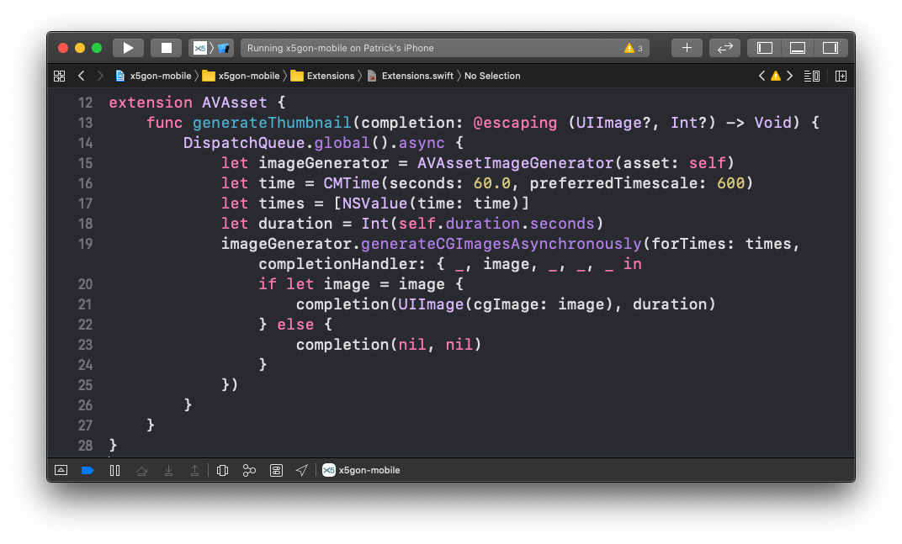
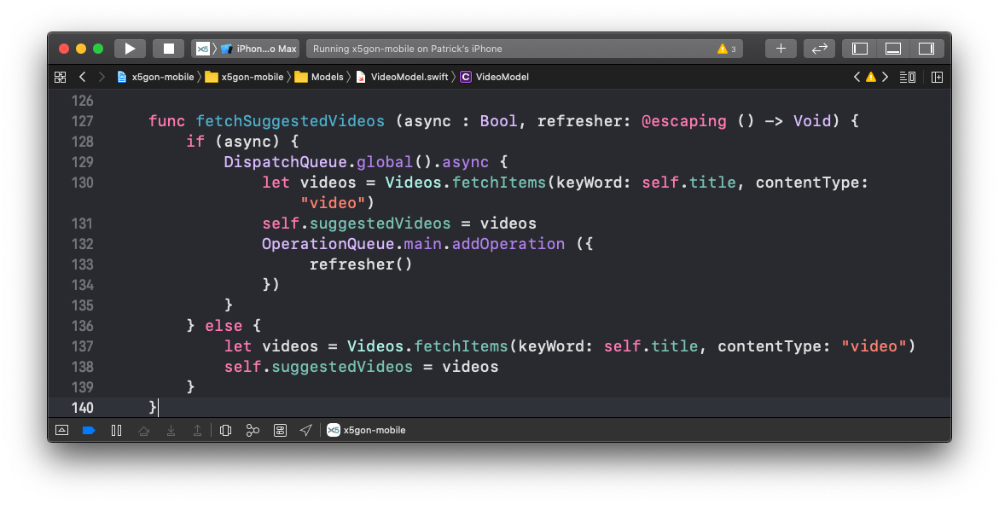

Main Technologies
As shown in our research, we have used Swift as our main language and Xcode and its toolchains as our IDE in our project.
As shown in our research, we have used Swift as our main language and Xcode and its toolchains as our IDE in our project.
In the meantime, we also imported some dependencies in our project to help us build, test and validate our project.
SwiftSoup is a pure Swift library, cross-platform (macOS, iOS, tvOS, watchOS and Linux!), for working with real-world HTML. It provides a very convenient API for extracting and manipulating data, using the best of DOM, CSS, and jQuery-like methods (Chatbi, 2020).
We are embedding SwiftSoup as a core part of the project to parse HTML sent from the X5Learn
backend. It empowers us to understand the API changes and adapt to it quickly.
JGProgressHUD is an elegant and simple progress HUD for iOS and tvOS (Gessner, 2020).
We adopt JGProgressHUD heavily in our user-friendly design and refreshing aspect of our application. We utilise this library in all main refresher() to clearly show the loading progress of our application and keep user informed of what the application is doing on the backend.

Instead of building documentation ourselves, we deployed jazzy, which hooks into Clang and SourceKit to use the AST representation of the code and actual code comments for generating documentation (realm/jazzy, 2020).
Moreover, with the touch of Jazzy templates, the documentation matches the look and feel of Apple’s official reference documentation.
Since Xcode 5, XCTest framework was introduced to perform unit test and UI Tests for Xcode projects (XCTest, 2020).
Our team took advantage of the built-in fast framework and wrote all of our test logic including unit tests, integration tests and performance tests on this framework, and archived 90%+ coverage. This enables us to deliver our product with confidence to our clients.

SwiftFormat is a code library and command-line tool for reformatting swift code on macOS or Linux (Lockwood, 2020).
Our team was faced with the problem that coding styles are different between the 2 of us. Therefore, we decided to use code linter and formatter to make sure our code compilers and adheres to a good tidy standard in general.
Travis CI is a hosted continuous integration service used to build and test software projects (Travis-CI, 2020).
In this project, we followed better CI/CD practices and pipelined our application's building and testing without human intervention. Travis CI consistently delivers build results and enables us to merge Pull Requests with reliable backup.

...
The X5GON backend provides users with videos but not thumbnails or preview methods.
To tackle this issue, we used a DispatchQueue (Apple, 2009) to create a separate Thread that aims to
generate thumbnails by fetching the video image at 1 minute mark, without interfering with user interface on the main thread.
Click on the code below to see an sample of implementation for such methods.
 We kept performance in mind since our application is rather network-heavy and requires common re-rendering.
That's the key reason why we load everything behind scene with Apple's Grand Central Dispatch Multi-threading (Apple, 2009) and hint UIView whenever we finish loading
to refresh only bits of Cells. This ensures smallest amount of load on both CPU and GPU on mobile platforms, and of course, greatest responsive from a users' perspective.
Click on the code below to see an sample of implementation for such methods.
Since our project is a mobile application, our implementation is heavily View based. Our team decide to present each view in our application for reference.


{kind=link}
{kind=link}